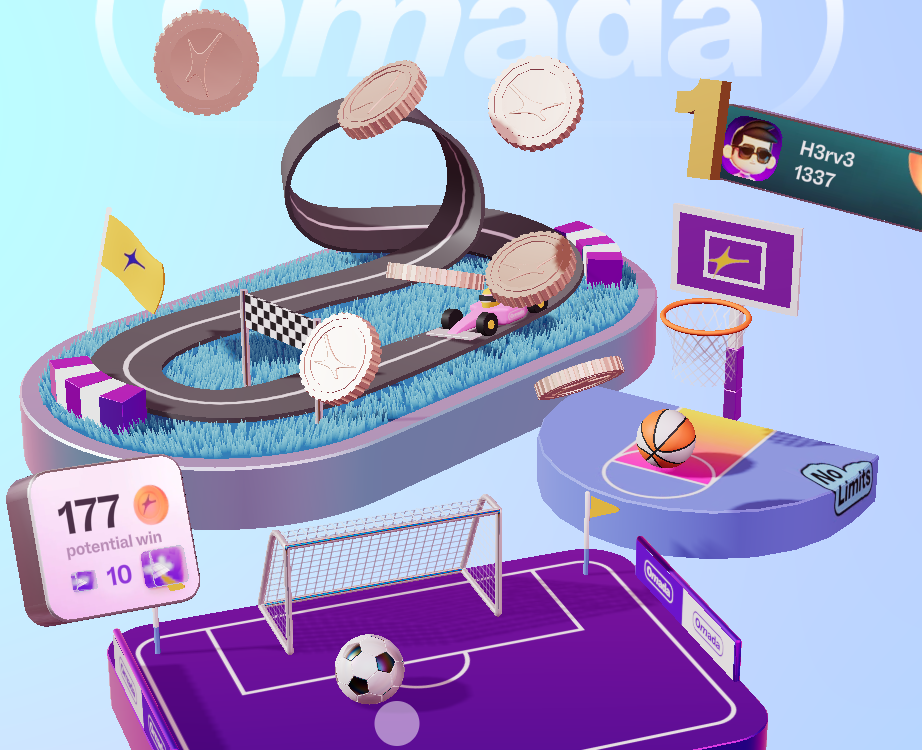
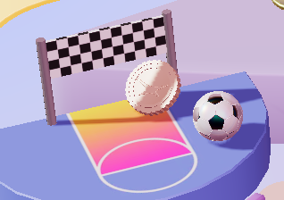
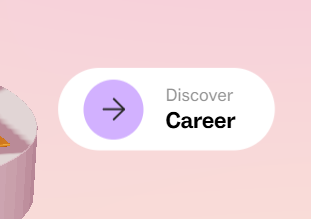
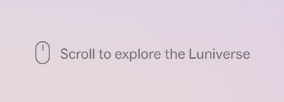
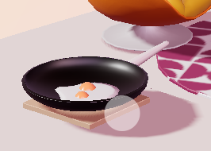

(1) What was the first thing you paid attention to when interacting with the experience?
The first thing that caught my attention was the seamless integration of 3D modeling with 2D graphic design within the website. At the center of the screen, several interactive 3D installations were presented in a way that felt both playful and minimal. As I moved my mouse, the entire scene responded with a slightly rotation, creating a strong sense of depth and dimensionality. The objects appeared to float against a light background color, which together conveyed a lively and uplifting atmosphere.
(2) Spend two minutes with the experience and create a list of each of your discrete actions.
Following the website's navigation cues, I began by scrolling down to access the module labeled “Omada”. Upon entering, I spent approximately one minute interacting with the clickable elements within the scene. Specifically, a soccer ball and a basketball, each of which rewarded me with a coin upon successfully scoring. After that, I clicked the “Discover Omada” button to read a brief introduction about the app and its purpose. Before I could explore the remaining modules, the two minutes had already passed.

(3) What part of the experience did you spend the most time engaging with?
I spent the majority of my time on the interactive 3D mini-games, particularly the one where I could click on a ball to shoot and score points. More broadly, most of my engagement involved exploring the 3D environment to identify all the interactive elements. I found myself clicking on various objects just to see which ones would respond, driven by a desire to uncover every hidden interaction within the scene.

(4) What was the most common action in your two minute interaction with the experience?
Clicking was the most frequent action I performed during the two minutes. Although the homepage prominently featured a “scroll to explore the Luniverse” prompt, my attention was consistently drawn to clicking on elements instead. The interface was designed in a way that sparked curiosity, like each object seemed potentially interactive, encouraging me to click repeatedly to discover what would happen next.
(5) What is your impression of the intended primary goal of the interactive experience?
I believe the primary goal is to spark and sustain user curiosity through immersive interaction. The design encourages me to explore the site actively rather than passively consume information. As users become more engaged with the interactive elements, they naturally transition into learning about the company's projects, team, etc.
(6) How does the interactive experience communicate this primary goal?
Each scene includes two or three interactive 3D elements that invite clicking and experimentation, effectively encouraging ongoing engagement. By placing the “Discover” button for each module nearby, the design offers a natural transition: after satisfying their curiosity with play, users are subtly guided to learn more about the company. This structure reinforces the idea that exploration leads to understanding, blending entertainment with information.

(7) What is your impression of how the experience should be interacted with over time? (For how long and how many different times)
Based on the structure, I estimate each module's 3D interactions take about one to two minutes to explore, while reading the “Discover” section adds another two minutes. Beyond the homepage, there are three modules designed with this combination of 3D and 2D elements. An additional section, “Luni Life”, features a collection of everyday images and would likely take two to three minutes to browse. Overall, the experience seems best suited for a single session lasting around ten to fifteen minutes.
(8) How does the interactive experience communicate how it should be interacted with over time?
The homepage clearly signals scrolling as the primary navigation method, suggesting that users are expected to move through each module in sequence. This linear guidance implies a journey where each section builds on the last. By presenting modules in a scrollable format, the design communicates that the experience is meant to be explored thoroughly in one continuous flow rather than in fragmented visits.

(9) What other media forms (digital or otherwise) does the experience reference?
The experience references interactive 3D modeling commonly found in video games and immersive digital installations. The small-scale, hands-on 3D objects resemble elements from casual mobile games or exploratory virtual environments.

(10) What does this reference/s communicate to you about how you should act when engaging with your research experience?
The references communicate that action should be exploratory and interactive. Clear navigation cues, such as scrolling prompts and module names appearing on hover, signal that the site expects users to click, scroll, and experiment. The presence of buttons like “Discover” further guides behavior, suggesting that interaction should alternate between playful engagement and information reading.
(11) What does this reference/s communicate to you about how you should feel when engaging with your research experience?
The overall design evokes a strong sense of curiosity, joy, and accomplishment. The playful 3D interactions create moments of delight, while the rewarding feedback, like earning coins, adds a layer of satisfaction. Together, these elements make the experience feel not only engaging but also emotionally positive, encouraging me to stay longer and explore more deeply.
(12) What is the most frustrating part of the interaction to you and what makes that part frustrating?
The most frustrating aspect was the lack of clear purpose at the outset. Because the 3D interactive elements occupied such a large portion of the screen, I initially struggled to understand the website's main goal. It felt more like a simple game than a platform for learning about the company. Only after spending additional time exploring did I begin to grasp the underlying content, which made the initial experience feel somewhat ambiguous.
(13) What is the most satisfying part of the interaction to you and what makes that part satisfying?
The most satisfying part was the cohesive and vibrant branding. I felt that the energetic and youthful atmosphere the design aimed to convey came through perfectly. The visual style was consistent across all modules, creating a unified and immersive environment. This strong aesthetic identity made the experience feel polished, intentional, and appealing.